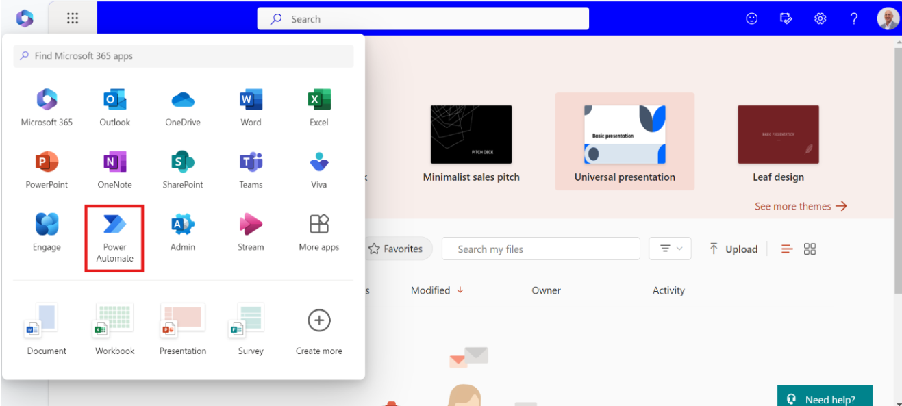
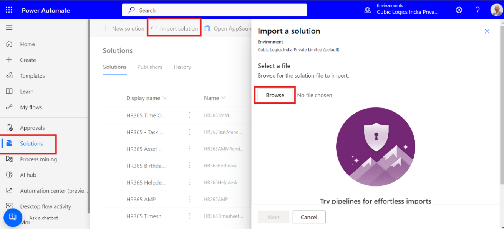
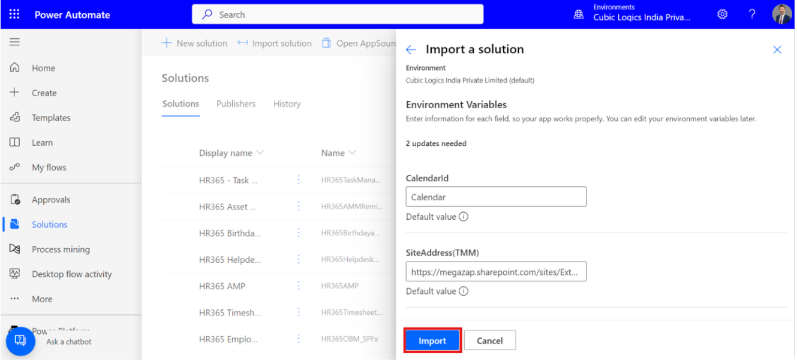
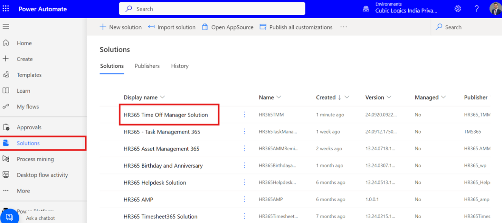
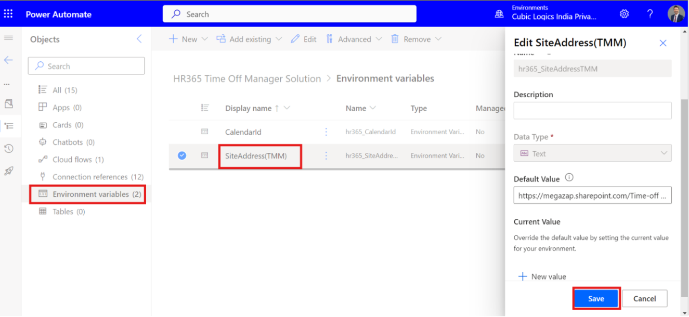
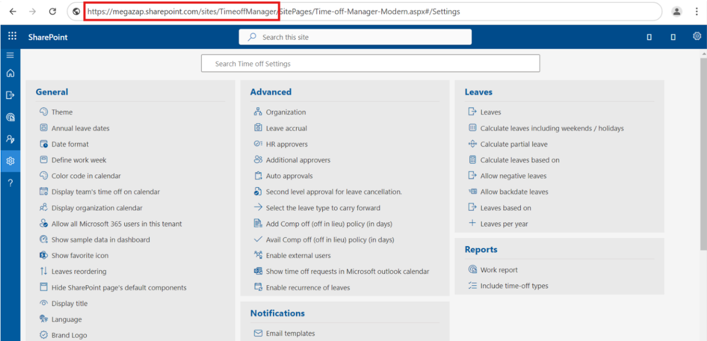
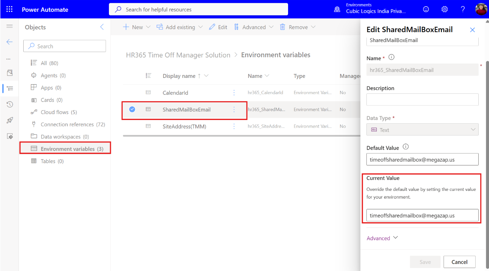
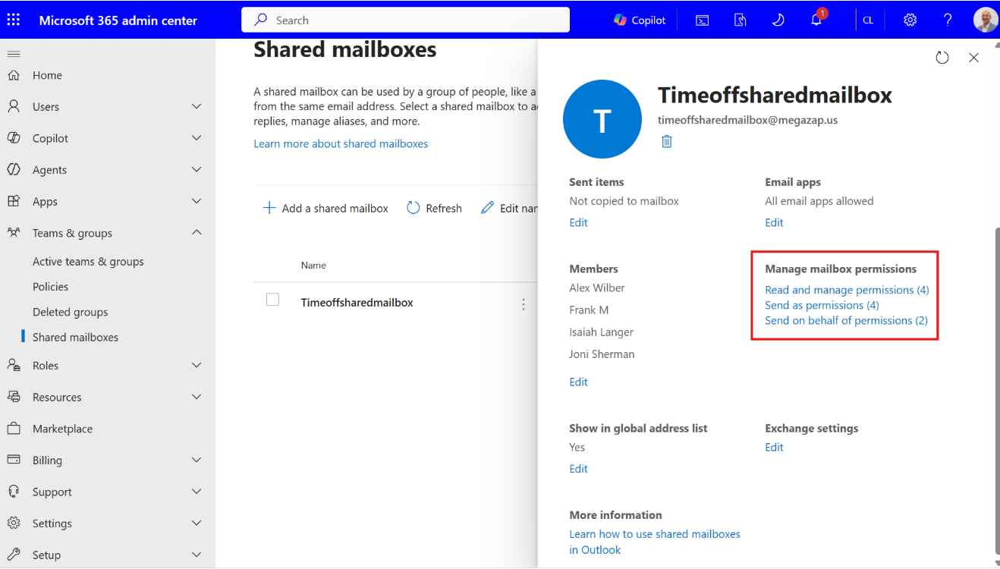
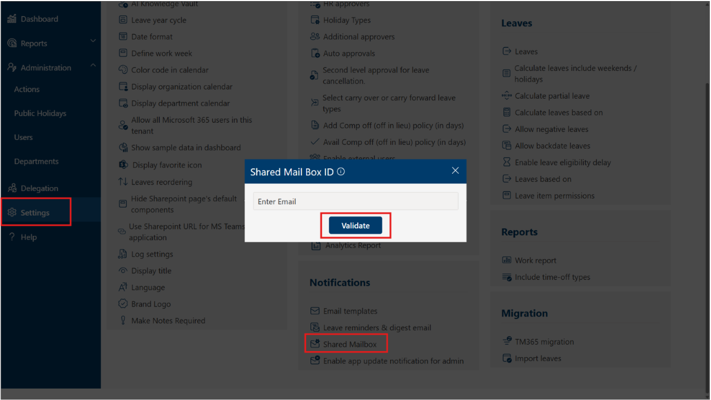
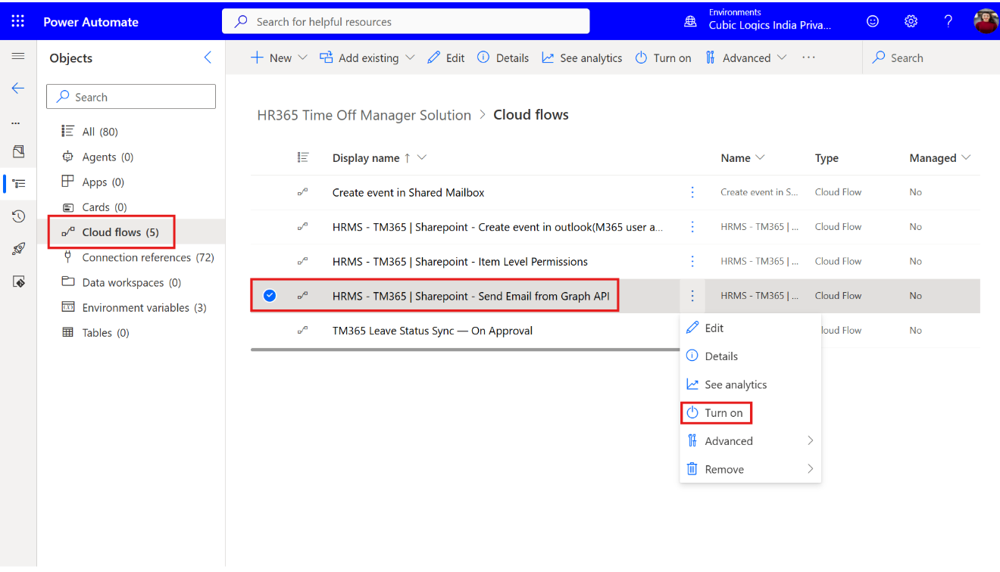

HR365 Time Off Manager Shared Mailbox & Outlook Calendar Configuration Guide
Overview
This document explains how to configure Power Automate for HR365 Time Off Manager to send notifications through a Shared Mailbox.
-
Step 1: Download the Solution
Ensure the administrator performing the configuration has a valid Power Automate license. Click here to download the HR365 Time Off Manager Power Automate solution package and open Power Automate from the Microsoft 365 app launcher. -
Step 2: Open Solutions
Navigate to Solutions in the left navigation panel of Power Automate and select Import Solution. -
Step 3: Upload the Solution
Click Browse and select the downloaded HR365 solution ZIP file. -
Step 4: Review Solution Details
Review the imported package information and click Next. -
Step 5: Configure Connections
Select the required SharePoint, Outlook, Office 365, and Power Automate connections for the logged-in user from the dropdown list. -
Step 6: Import the Solution
Click Import and wait for the process to complete successfully. Once imported, select and open the imported solution named HR365 Time Off Manager Solution. -
Step 7: Configure Site URL Environment Variable
Navigate to Environment Variables within the HR365 Time Off Manager Solution. Open SiteAddress (TMM) (or Site URL) and replace the default value with your application's SharePoint site URL. Save the changes. -
Step 8: Configure Shared Mailbox Email
Open the SharedMailBoxEmail environment variable and enter the Shared Mailbox email address in the Current Value field. Click Save to store the configuration. -
Step 9: Verify Shared Mailbox Permissions
Ensure that the user account used to configure the Power Automate connections has the following permissions on the Shared Mailbox:- Read and Manage (Full Access)
- Send As
- Send on Behalf
To verify:
- Open the Microsoft 365 Admin Center.
- Navigate to Teams & groups > Shared mailboxes.
- Select the configured Shared Mailbox.
- Under Manage mailbox permissions, confirm that the Power Automate configuration user has all three permissions listed above.
- If any permission is missing, assign it and allow time for the changes to propagate before testing email notifications.
-
Step 10: Validate Shared Mailbox in HR365
In the HR365 application, navigate to Settings > Notifications > Shared Mailbox, enter the Shared Mailbox email address, and click Validate. -
Step 11: Enable Graph API Email Flow
Under Cloud flows in Power Automate, locate HRMS - TM365 | SharePoint - Send Email from Graph API and select Turn On. This ensures notifications are sent seamlessly through the configured Shared Mailbox.









